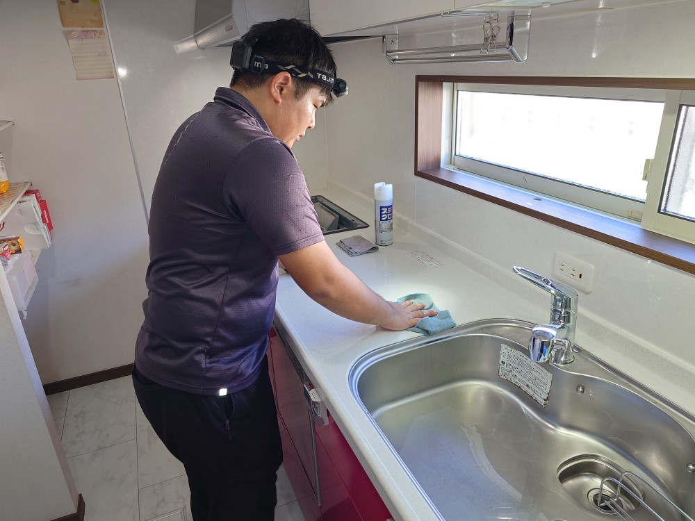
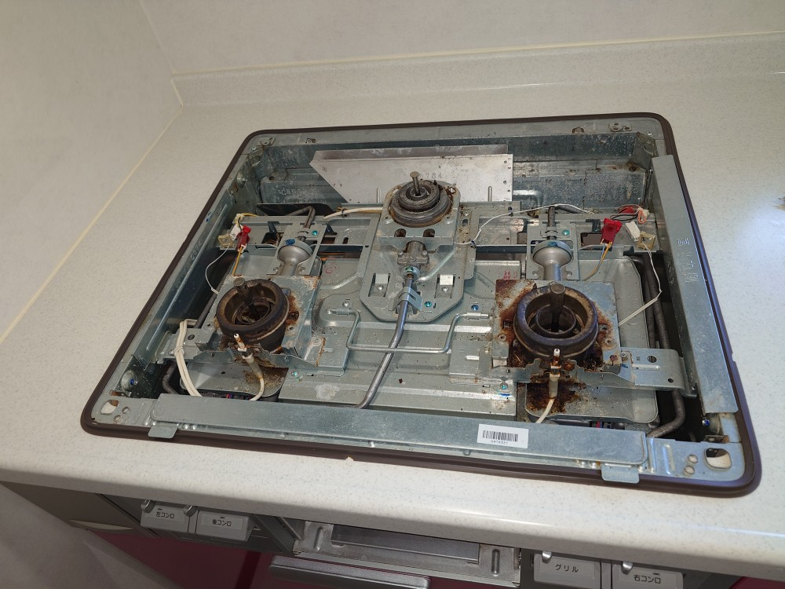
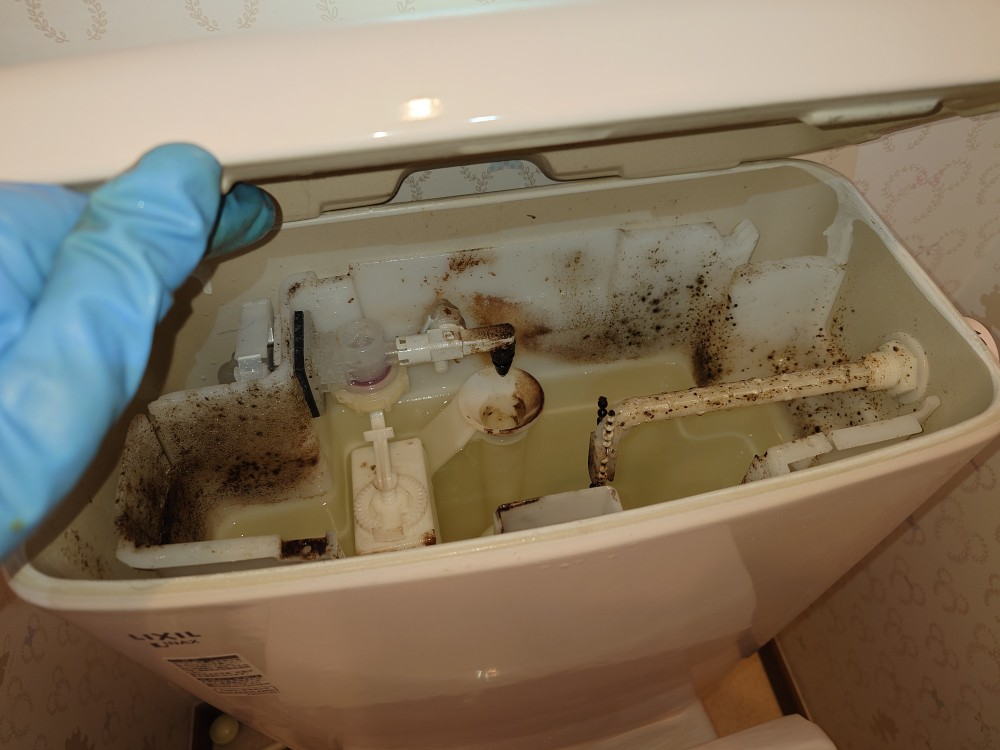
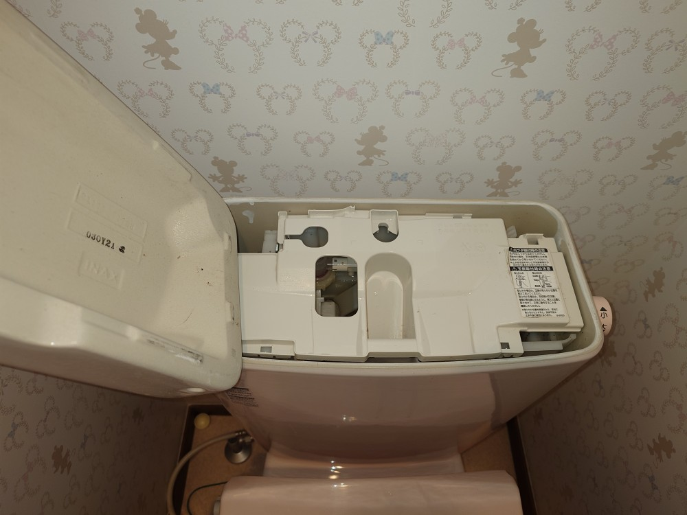
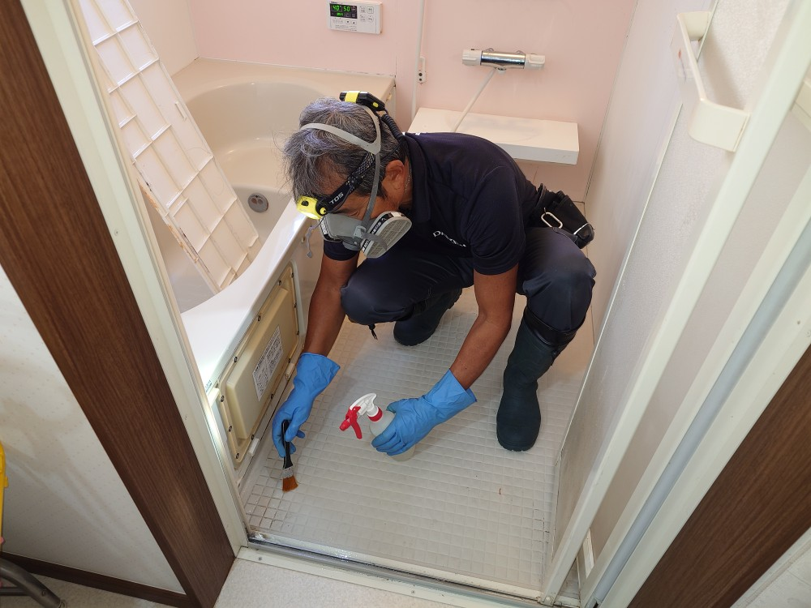
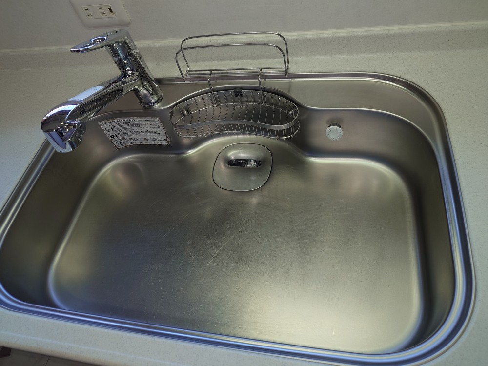
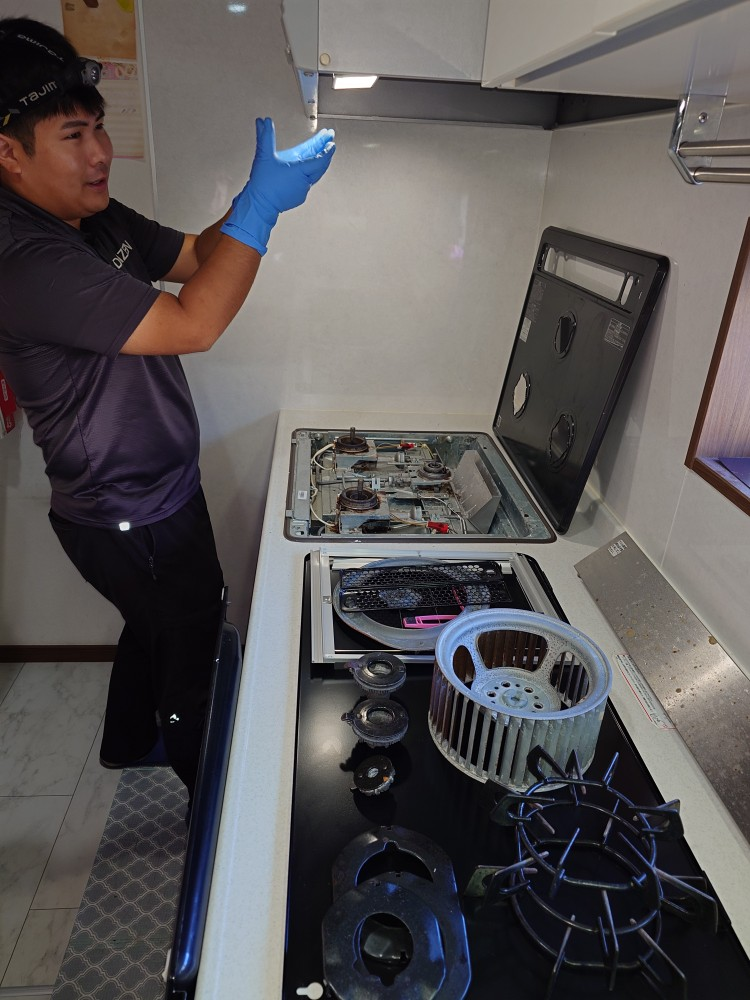
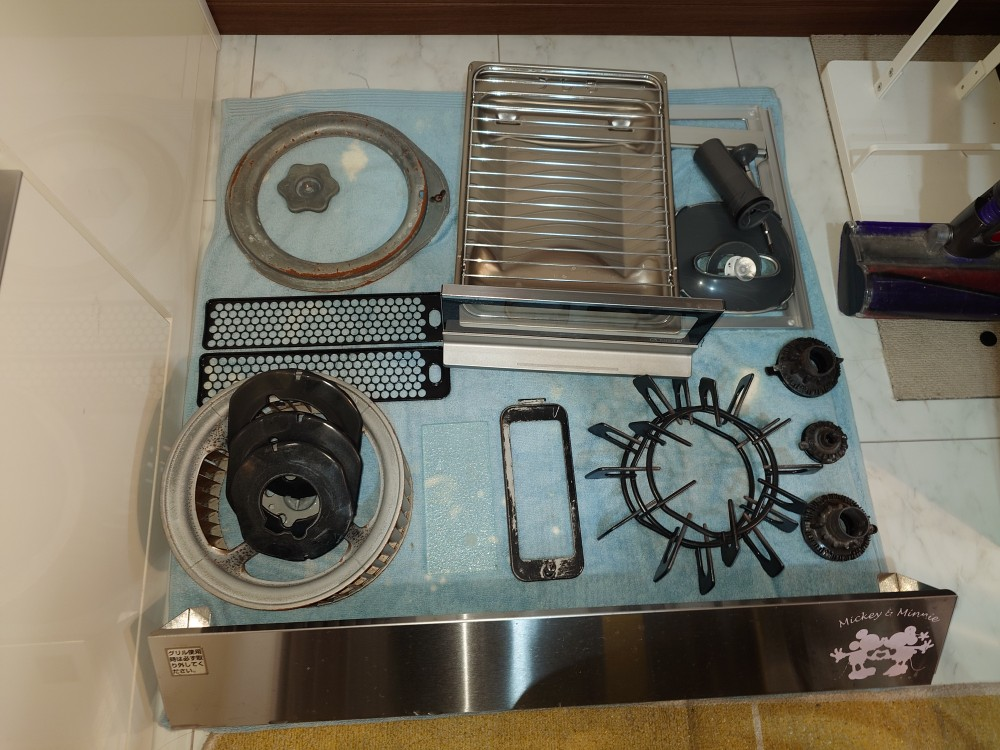

千葉県流山市リピーターさんMさんの半年に1度の定期水回りスペシャルクリーニング、お手洗い追加1つのプロフェッショナルクリーニングを実施しました!

千葉県流山市のリピーターさんのМさんご自宅の水回りは、半年に1度の定期特別価格水回りスペシャルクリーニングを実施しております！毎年5月と11月に、年2回のプレミアムクリーニングを実施しております！年末12月は水回りクリーニングの予約が殺到するため、じっくり清掃が出来て、その上リピーター定期の特別価格でご提供出来る11月と5月の年2回に訪問してクリーニングさせて頂いております！年2回で3年も実施していると、Мさんご自宅の水回り設備にすっかり詳しく成りまして、どんどん実施精度、除去速度が向上してきておりまして、よいことになっております！半年ごとのクリーニングではありますが、水回りはどうしてもわずか半年でしっかりと「油汚れ」「油の堆積汚れ」「浴室の水垢汚れ」「浴室の石鹸カス汚れ」「お手洗いの尿石汚れ」が定番の様に付着しております、全てDAIZENプロフェッショナルメソッドに則りパーフェクトに除去していつも通りにピカピカに綺麗にクリーニングしました!Mさんにはいつも通り大変喜んで頂けました！良かったです！







